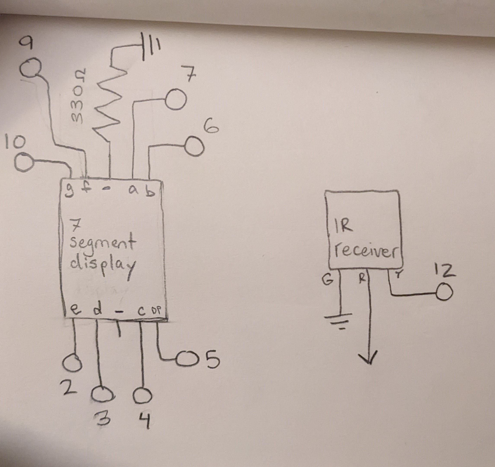
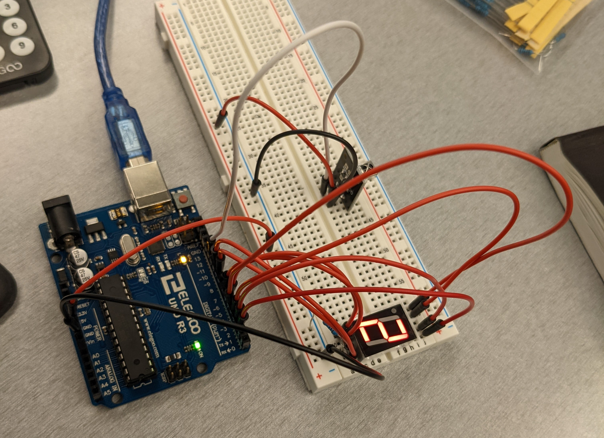

The Arduino receives signals from an IR remote and receiver, then displays output on a seven segment display. Libraries are used to decode the IR remote's input and write to the display.The LEDs in the seven segment display need a minimum of 160 ohms to limit current to 20mA. I used a 330 ohm resistor on the LEDs' common cathode because it was easier and a bit more resistance is fine.
Circuit in Action

In retrospect, I should have used some variety of colored wires to hook up the display for clarity. It wouldn't be displaying the numbers correctly if it was hooked up wrong.Hitting a number on the remote causes that number to appear on the seven segment display.
/*
File: LibrariesA4.ino
Author: Max Coppock
Uses two libraries to read numbers from an IR remote and write them to a seven segment display.
*/
//include seven segment display library
//https://github.com/alikabeel/Letters-and-Numbers-Seven-Segment-Display-Library
#include <SevenSegmentDisplay.h>
//set decoding protocol for the IR remote
#define DECODE_NEC
//include IR Remote library
//https://github.com/Arduino-IRremote/Arduino-IRremote
#include <IRremote.h>
//these values define the codes corresponding to numbers for the IR remote
//I found these by printing out the IR receiver's data when I pushed a number button on the remote
#define IR_BUTTON_0 22
#define IR_BUTTON_1 12
#define IR_BUTTON_2 24
#define IR_BUTTON_3 94
#define IR_BUTTON_4 8
#define IR_BUTTON_5 28
#define IR_BUTTON_6 90
#define IR_BUTTON_7 66
#define IR_BUTTON_8 82
#define IR_BUTTON_9 74
//initialize the seven segment display
//SevenSegmentDisplay screenName(A_pin, B_pin, C_pin, D_pin, E_pin, F_pin, G_pin, DP_pin, isAnodeDisplay);
SevenSegmentDisplay smeven(7, 6, 4, 3, 2, 9, 10, 5, false);
//defining pin for the IR signal coming in
int irIN = 12;
void setup() {
// put your setup code here, to run once:
//disable the decimal point on the seven seg display
smeven.displayDecimalPoint(false);
//start serial monitor
Serial.begin(9600);
//start the IR Receiver on its signal pin, LED feedback disabled
//IrReceiver.begin(IR_RECEIVE_PIN, ENABLE_LED_FEEDBACK);
IrReceiver.begin(irIN, false);
//print IR startup info to serial monitor
Serial.print(F("Ready to receive IR signals of protocols: "));
printActiveIRProtocols(&Serial);
}
void loop() {
// put your main code here, to run repeatedly:
//if the IR receiver has a message to decode
if(IrReceiver.decode()){
//print out what the IR receiver received
IrReceiver.printIRResultShort(&Serial);
//if there's a jumbled or unknown signal (for debugging)
/*
if (IrReceiver.decodedIRData.protocol == UNKNOWN) {
Serial.println(F("Received noise or an unknown (or not yet enabled) protocol"));
} */
//set the receiver up for the next incoming reading
IrReceiver.resume();
//save the IR command to this variable
int command = IrReceiver.decodedIRData.command;
//switch/case to display a number based on the command
//for each case:
// use the 7 seg display library to display the corresponding number
// break
switch (command) {
// hit 0 on remote
case IR_BUTTON_0: {
//display 0
smeven.displayCharacter('0');
break;
}
// hit 1 on remote
case IR_BUTTON_1: {
//display 1
smeven.displayCharacter('1');
break;
}
// 2
case IR_BUTTON_2: {
//display 2
smeven.displayCharacter('2');
break;
}
// 3
case IR_BUTTON_3: {
//display 3
smeven.displayCharacter('3');
break;
}
// 4
case IR_BUTTON_4: {
//display 4
smeven.displayCharacter('4');
break;
}
// 5
case IR_BUTTON_5: {
//display 5
smeven.displayCharacter('5');
break;
}
// 6
case IR_BUTTON_6: {
//display 6
smeven.displayCharacter('6');
break;
}
// 7
case IR_BUTTON_7: {
//display 7
smeven.displayCharacter('7');
break;
}
// 8
case IR_BUTTON_8: {
//display 8
smeven.displayCharacter('8');
break;
}
// 9
case IR_BUTTON_9: {
//display 9
smeven.displayCharacter('9');
break;
}
// other buttons on the remote do nothing
default: {
//but print out this message
Serial.println("Button not recognized");
}
}
}
}